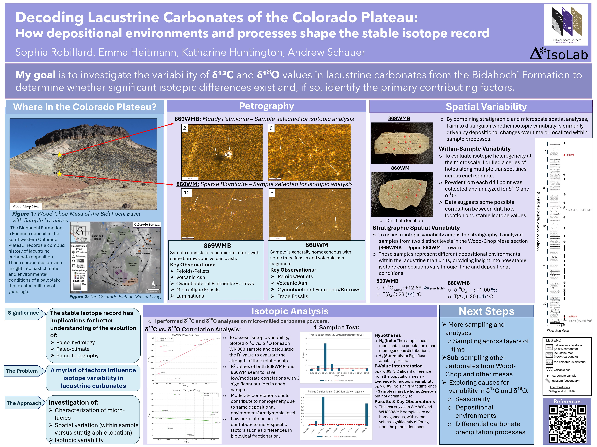

Awards!
"Rising Rockstar" Best Undergraduate Poster Presentation
Issued by the University of Washington Earth & Space Sciences Research Gala - April 2025
Recognized for excellence in poster presentation at the 2025 annual ESS Research Gala, focusing on stable isotope geochemistry research of the Bidahochi Basin in the Colorado Plateau.

Afton Woolley Crooks & James William Crooks Endowed Scholarship in Geological Sciences
Issued by the University of Washington College of the Environment - April 2025